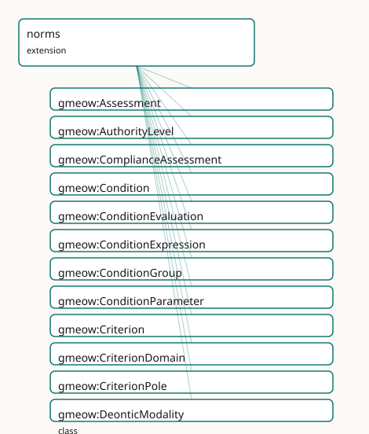

GMEOW Norms Module
- IRI: https://blackcatinformatics.ca/gmeow/slices/norms
- Tier: extension
Group: extensions
What This Slice Covers
This slice owns 114 terms and contributes 5 mapping or projection rows. Use it when its terms match the native fact you want to preserve; use the linkage tables to see how those facts leave GMEOW for consumer vocabularies.
Dependencies
gmeow:slices/citationsgmeow:slices/documentsgmeow:slices/eventsgmeow:slices/kernelgmeow:slices/namesgmeow:slices/observationsgmeow:slices/rightsgmeow:slices/standpointgmeow:slices/teleologygmeow:slices/temporal
Consumers
- The lbox principia importer (EPIC: 4-tier authority hierarchy, special-directive triggers, paradigm precedence) and policy import/export (ODRL round-trip; OPA/Rego, Cedar, XACML down-projection — deferred to the compiler-arc window with the alignment set). The rubrics facility lives in this slice (
Rubric⊑Norm; the P16 DAG rule bars extension→extension dependencies): consumers are the lm-eval-harness task projection, the principia RLAIF axes/score-anchor import, and LLM-judge score ingestion as vantage-indexed Assessments. The registers & personas facility also lives here (expressesNorm→Norm,activatedIn→Condition; same P16 DAG rationale): consumers are system-prompt assembly (Persona× Norms ×StyleGuide— the projection that replaces principia.yaml's Jinja2 role, deferred to the compiler-arc window with the alignment set) and the principia persona_modes/paradigm-activation import.
Local Map

Terms
Classes
| Term | Label | Definition |
|---|---|---|
gmeow:Assessment |
Assessment | An observation that scores a target against a criterion (or whole rubric) — vantage = the judge, human or model: an LLM judge is just a vantage, and two models... |
gmeow:AuthorityLevel |
Authority Level | The claimed authority grade of a norm within its issuing system — an ordered value vocabulary (absolute ≻ high ≻ medium ≻ conditional), the kernel GranularityL... |
gmeow:ComplianceAssessment |
Compliance Assessment | An observation that an event complied with or violated a norm — vantage = the assessor. The reified form of gmeow:violates / gmeow:complies, for when who-judge... |
gmeow:Condition |
Condition | A describable circumstance — the trigger of a conditional norm, the activation context of a persona, the antecedent of a causal link. The canonic... |
gmeow:ConditionEvaluation |
Condition Evaluation | An observation that a condition held, did not hold, or could not be determined at some moment — vantage = the evaluator (an agent, a solver run, a model). The... |
gmeow:ConditionExpression |
Condition Expression | A machine formalization of a condition in a named expression language. STORED, NEVER EXECUTED: no CI step, test, or tool may evaluate a ConditionExpression aga... |
gmeow:ConditionGroup |
Condition Group | A composite condition — all-of, any-of, or none-of its members (arbitrary and/or/not trees by nesting groups). Requires an operator and at least two members (S... |
gmeow:ConditionParameter |
Condition Parameter | A named binding that instantiates a condition template — 'threshold = 0.8', 'jurisdiction = Canada'. Lets one Condition serve many norms with different binding... |
gmeow:Criterion |
Criterion | One evaluative axis of a rubric — what is being judged, with NAMED poles: a reward pole and a penalty pole that are small information objects with their own la... |
gmeow:CriterionDomain |
Criterion Domain | The subject domain of a criterion — an OPEN value vocabulary (relational, factual, aesthetic, safety, stylistic, …). Open: evaluation traditions disagree about... |
gmeow:CriterionPole |
Criterion Pole | A NAMED extreme of a criterion — a small information object carrying its own label and definition. Poles are content, not numbers: 'Power from the Bottom' name... |
gmeow:DeonticModality |
Deontic Modality | The deontic force of a norm — an OPEN value vocabulary (individuals, never subclasses) seeded with obligation (must), prohibition (must not), permission (may),... |
gmeow:EvaluationVerdict |
Evaluation Verdict | The outcome of a condition evaluation — held, not held, or undetermined. A closed three-member value vocabulary. Semantically the observationResult of a Condit... |
gmeow:Exemplar |
Exemplar | A citation act that holds something up as an example — positively, negatively, or as a cautionary boundary case. Pins into the cited work via the citation Sele... |
gmeow:ExemplarPolarity |
Exemplar Polarity | The direction of an exemplar — a CLOSED three-member value vocabulary: positive (emulate this), negative (avoid this), cautionary (a boundary case that LOOKS p... |
gmeow:ExpressionLanguage |
Expression Language | The language of a condition expression — an OPEN value vocabulary seeded with the policy-engine and query languages GMEOW projects to: prose, SPARQL ASK, CEL,... |
gmeow:GroupOperator |
Group Operator | The combination operator of a condition group — a closed three-member value vocabulary: all (conjunction), any (disjunction), none (negated disjunction). |
gmeow:Norm |
Norm | A prescription existing by social convention — an obligation, prohibition, permission, or recommendation issued by an agent or standpoint over some conduct. A... |
gmeow:NormativeSystem |
Normative System | A body of norms with a shared identity — a constitution, a legal code, a code of conduct, a principia document, a rubric set. Member norms attach via gmeow:par... |
gmeow:Persona |
Persona | A reified expression policy of one agent — the relator binding {bearer} × {register(s)} × {expressed norms} × {activation context}. PRIMARY and PRIVATE are two... |
gmeow:PrecedenceTenure |
Precedence Tenure | The reified, time-scoped fact that one norm took precedence over another within a normative system over an interval — 'Tier 2 overrode X until v3.5' made sayab... |
gmeow:Rubric |
Rubric | A norm for judging — a reified evaluation framework whose criteria, poles, scales, and anchors are first-class content. Being a Norm, a rubric names its issuer... |
gmeow:ScoreAnchor |
Score Anchor | A pinned score range with its meaning and exemplars — 'range 0.8–1.0 means the text embodies the covenant, as in THIS passage'. Anchors are the rubric's calibr... |
gmeow:ScoreScale |
Score Scale | A numeric scale for assessments — minimum, maximum, optional step. Scale arithmetic (normalization, conversion between scales) is solver work (Principle 12). |
gmeow:StyleGuide |
Style Guide | The voice payload of a persona or register — prose whose REGISTER IS THE CONTENT. The prose-voice doctrine (EPIC gap analysis): voice documents attach byt... |
Properties
| Term | Label | Definition |
|---|---|---|
gmeow:activatedIn |
activated in | The context that activates this persona — a gmeow:Condition (the norms machinery: prose-canonical, optionally formalized, evaluated only as vantage-indexed Con... |
gmeow:anchorExemplar |
anchor exemplar | An exemplar pinned to this anchor's range. NOT functional: several exemplars may calibrate one range. |
gmeow:anchorMeaning |
anchor meaning | What scores in this range MEAN — the calibration prose. NOT functional and range-open (review): localizable prose may carry one meaning per language ta... |
gmeow:anchorRangeMax |
anchor range maximum | The anchored range's upper bound. Functional. |
gmeow:anchorRangeMin |
anchor range minimum | The anchored range's lower bound. Functional; must not exceed the upper bound (SHACL). |
gmeow:assessedEvent |
assessed event | The event whose compliance is assessed (⊑ observedFeature). Functional. |
gmeow:assessedNorm |
assessed norm | The norm against which the event is assessed. Functional: one assessment, one norm. |
gmeow:assessmentCriterion |
assessment criterion | The criterion applied. Functional: a 21-axis scoring pass is 21 Assessments (zeros included — a zero is a score, not an absence). Plays the observationMethod r... |
gmeow:assessmentRubric |
assessment rubric | The rubric under which this assessment was made — version-pinning context for the score. Functional. Plays the observationMethod role without the subproperty a... |
gmeow:assessmentScoreValue |
assessment score value | The numeric score, on the scale the criterion or rubric declares. Functional and mandatory (SHACL). A datatype twin of observationResult (which is entity-value... |
gmeow:assessmentTarget |
assessment target | What is being scored — a work, an expression, a content segment, a chunk (⊑ observedFeature, the bridge idiom). Range intentionally open. Functional: one a... |
gmeow:complianceVerdict |
compliance verdict | The assessor's verdict, reusing the EvaluationVerdict vocabulary: held = compliant, not held = violative, undetermined = undetermined. Functional and mandatory... |
gmeow:complies |
complies with | Flat shortcut: the event complies with the norm — according to whoever asserts it. The positive twin of gmeow:violates; same promotion path, same never-entaile... |
gmeow:conditionParameter |
condition parameter | A parameter binding of this condition. NOT functional. |
gmeow:conditionText |
condition text | The natural-language statement of the condition — the canonical form, always present (SHACL). Formalizations approximate the prose, not the other way around. |
gmeow:criterionDomain |
criterion domain | The subject domain(s) of this criterion. NOT functional: a criterion may span domains, and classifications coexist (Principle 9). |
gmeow:deonticModality |
deontic modality | The deontic force of this norm. Functional: one norm, one force — a rule that both permits and obliges is two norms. A norm carrying a modality must also carry... |
gmeow:evaluatedCondition |
evaluated condition | The condition this evaluation reports on (⊑ observedFeature — the bridge idiom). Functional: one evaluation, one condition; group members get their own eva... |
gmeow:evaluationVerdict |
evaluation verdict | The verdict of this evaluation. Functional and mandatory (SHACL). The claimModality pattern: equivalent in role to observationResult, separate in axiom because... |
gmeow:exemplarPolarity |
exemplar polarity | The exemplar's direction. Functional and mandatory (SHACL): an exemplar that cannot say whether to emulate or avoid is just a citation. |
gmeow:exemplarRationale |
exemplar rationale | Why this is an exemplar — the judgement prose. NOT functional and range-open (review): localizable, one rationale per language tag; whose judgement it... |
gmeow:exemplarRedirect |
redirects to | For cautionary exemplars: the criterion this passage ACTUALLY evidences — 'clinical trust frameworks belong to polymath competence, not the covenant'. NOT func... |
gmeow:exemplarSubject |
exemplar subject | The entity whose pattern the exemplar evidences — a frame-scoped character whose conduct across the cited work is the example (EPIC: 823 such links in the... |
gmeow:expressesNorm |
expresses norm | A norm this persona expresses — the 'same principia, different registers' invariant made queryable: whether all personas of one agent express the same authorit... |
gmeow:expressionLanguage |
expression language | The language of this expression. Functional and mandatory (SHACL). |
gmeow:expressionText |
expression text | The expression source, verbatim, in the named language. Functional and mandatory (SHACL). |
gmeow:formalizedAs |
formalized as | Attaches a machine formalization to a condition. NOT functional: one condition, several formalizations (one per engine), each a separate equivalence claim with... |
gmeow:groupMember |
group member | A member condition of this group. At least two (SHACL); nest groups for arbitrary trees. |
gmeow:groupOperator |
group operator | The combination operator of this group. Functional and mandatory (SHACL). |
gmeow:hasAuthorityLevel |
has authority level | The authority grade an issuing system claims for this norm. NOT functional: in a multi-source merge, sources may grade the same norm differently, and those cla... |
gmeow:hasCriterion |
has criterion | Relates a rubric to one of its evaluative axes (⊑ gmeow:hasPart — criteria are parts of the framework). NOT functional: rubrics are multi-axis by design. |
gmeow:hasScoreAnchor |
has score anchor | Relates a criterion to one of its calibration anchors. NOT functional: high / medium / low anchors coexist. |
gmeow:normBearer |
norm bearer | An agent the norm binds. NOT functional: a norm may bind several named bearers. ABSENT means the norm binds everyone in its issuer's scope — the gmeow:ruleAssi... |
gmeow:normCondition |
norm condition | The condition under which this norm applies. NOT functional: several conditions on one norm are an implicit conjunction; use a gmeow:ConditionGroup when the co... |
gmeow:normIssuer |
norm issuer | The agent or standpoint according to which this norm holds — the constitutional keystone: there is no ought, only ought-according-to. DOMAIN-FREE on purpose: g... |
gmeow:overrides |
overrides | Pairwise defeasible precedence: when both norms apply, the subject prevails over the object — according to whoever asserts this claim (statement-layer indexed... |
gmeow:parameterEntity |
parameter entity | The bound entity for IRI-valued bindings. Range intentionally open. A parameter carries exactly one of parameterValue / parameterEntity (SHACL). |
gmeow:parameterName |
parameter name | The parameter's name as used in the condition text or expressions. Functional and mandatory (SHACL). |
gmeow:parameterValue |
parameter value | The bound literal value. Use gmeow:parameterEntity for IRI-valued bindings; a parameter carries exactly one of the two (SHACL). |
gmeow:penaltyPole |
penalty pole | The named pole this criterion penalizes. Functional and mandatory (SHACL — no poles is no axis); must differ from the reward pole (SHACL). |
gmeow:personaBearer |
persona bearer | The agent whose expression policy this persona is. Functional and mandatory (SHACL): one persona, one bearer; an agent bears many co-equal personas. |
gmeow:personaRegister |
persona register | A register this persona expresses in — drawn from the names-core gmeow:Register spine (a name register IS a register; persona and address registers share one v... |
gmeow:precedenceHigher |
precedence higher | The norm that prevails during this tenure. Functional. |
gmeow:precedenceLower |
precedence lower | The norm that yields during this tenure. Functional, and distinct from precedenceHigher (SHACL). |
gmeow:precedenceScope |
precedence scope | The normative system within which this precedence holds. Functional and mandatory (SHACL): precedence is always scoped — a system orders its own norms; it cann... |
gmeow:prescribedConduct |
prescribed conduct | The conduct the norm is about — an event type, a goal, a situation, or a rights action (via the graft). The range is intentionally open (the tenure... |
gmeow:rewardPole |
reward pole | The named pole this criterion rewards. Functional and mandatory (SHACL — no poles is no axis); must differ from the penalty pole (SHACL). |
gmeow:scaleMax |
scale maximum | The scale's maximum value. Functional and mandatory; must exceed the minimum (SHACL). |
gmeow:scaleMin |
scale minimum | The scale's minimum value. Functional and mandatory; must be below the maximum (SHACL). |
gmeow:scaleStep |
scale step | The scale's granularity step, when discrete. Optional; absent means continuous. |
gmeow:strongerThan |
stronger than | Orders authority levels: the subject level carries more claimed authority than the object level. Transitive ON LEVELS ONLY (the gmeow:coarserThan pattern) — no... |
gmeow:styleGuideFor |
style guide for | What this guide voices — a gmeow:Persona or a gmeow:Register value. Range intentionally open across the two. NOT functional (one guide may voice a persona and... |
gmeow:systemIssuer |
system issuer | The agent or standpoint that issues a normative system as a whole. ⊑ normIssuer: issuing the system is issuing its stance. Member norms may still carry their o... |
gmeow:usesScale |
uses scale | The score scale a rubric or criterion uses. Domain-free (rubric-level default, criterion-level override — the holder is whatever points here); functional: one... |
gmeow:violates |
violates | Flat shortcut: the event violates the norm — according to whoever asserts it (statement-layer indexed). Promote to a gmeow:ComplianceAssessment when the assess... |
Individuals
| Term | Label | Definition |
|---|---|---|
gmeow:authorityAbsolute |
absolute | The absolute authority level — the issuing system claims this norm overrides all others it issues. |
gmeow:authorityConditional |
conditional | The conditional authority level — authority contingent on an activation condition. |
gmeow:authorityHigh |
high | The high authority level. |
gmeow:authorityMedium |
medium | The medium authority level. |
gmeow:criterionDomainAesthetic |
aesthetic | The criterion evaluates aesthetic or expressive qualities. |
gmeow:criterionDomainFactual |
factual | The criterion evaluates factual accuracy or groundedness. |
gmeow:criterionDomainRelational |
relational | The criterion evaluates relational or interpersonal qualities. |
gmeow:criterionDomainSafety |
safety | The criterion evaluates safety properties or harm avoidance. |
gmeow:criterionDomainStylistic |
stylistic | The criterion evaluates style, register, or voice. |
gmeow:deonticObligation |
obligation (must) | The obligation modality — the issuer requires the conduct. |
gmeow:deonticPermission |
permission (may) | The permission modality — the issuer allows the conduct. |
gmeow:deonticProhibition |
prohibition (must not) | The prohibition modality — the issuer forbids the conduct. |
gmeow:deonticRecommendation |
recommendation (should) | The recommendation modality — the issuer advises the conduct without requiring it. |
gmeow:exprLangCedar |
Cedar | The Cedar authorization policy language. |
gmeow:exprLangCel |
CEL | Common Expression Language. |
gmeow:exprLangProse |
prose | Natural-language restatement (a translation, not a formalization). |
gmeow:exprLangRego |
Rego (OPA) | Open Policy Agent's Rego policy language. |
gmeow:exprLangShacl |
SHACL | A SHACL shapes graph used as a condition formalization. Carried as data like every other expression — never loaded into the validation harness (Principle 12). |
gmeow:exprLangSparqlAsk |
SPARQL ASK | A SPARQL ASK query. |
gmeow:exprLangXacml |
XACML | OASIS XACML policy XML. |
gmeow:operatorAll |
all of (and) | The conjunction operator — the group holds when every member holds. |
gmeow:operatorAny |
any of (or) | The disjunction operator — the group holds when at least one member holds. |
gmeow:operatorNone |
none of (not) | The negation operator — the group holds when no member holds. |
gmeow:polarityCautionary |
cautionary | A boundary case — superficially like the reward pole but warning or redirecting (the anti-pattern with a correct-criterion redirect). |
gmeow:polarityNegative |
negative | An exemplar to avoid. |
gmeow:polarityPositive |
positive | An exemplar to emulate. |
gmeow:registerBrandVoice |
brand voice | The brand-voice register — an organization's curated public expression identity. |
gmeow:registerCeremonial |
ceremonial | The ceremonial register — ritual, liturgical, or protocol-bound expression. |
gmeow:registerClinical |
clinical | The clinical register — professional, affect-controlled expression (bedside manner, counsel). |
gmeow:registerPrivate |
private | The private register — expression within a trusted inner scope. |
gmeow:registerPublic |
public | The public register — expression toward an undifferentiated or hostile audience. |
gmeow:verdictHeld |
held | The evaluator found the condition to hold. |
gmeow:verdictNotHeld |
not held | The evaluator found the condition not to hold. |
gmeow:verdictUndetermined |
undetermined | The evaluator could not determine whether the condition held. |
Linkages
- Rows: 5
- Projection profiles:
schema-org - External vocabularies:
rdf,schema
| Source | Kind | Profile | Predicate/Relation | Target | Evidence |
|---|---|---|---|---|---|
gmeow:assessmentScoreValue |
equivalence | - |
skos:closeMatch | schema:ratingValue | gmeow-norms.sssom.tsv; gmeow:eqNorms002; confidence 0.85 |
gmeow:assessmentTarget |
equivalence | - |
skos:closeMatch | schema:itemReviewed | gmeow-norms.sssom.tsv; gmeow:eqNorms001; confidence 0.85 |
gmeow:Assessment |
projection | schema-org |
projects to / <= | rdf:type, schema:ClaimReview, schema:Rating, schema:author, schema:itemReviewed, schema:ratingValue, schema:reviewRating | gmeow:mapSchemaClaimReview; confidence 0.85; lossy: the criterion/rubric structure and scale metadata collapse to a bare ratingValue; each review stays authored by its vantage — N competing assessments emit N coexisting ClaimReviews, never one aggregated rating (P9) |
gmeow:assessmentScoreValue |
projection | schema-org |
projects to / <= | rdf:type, schema:ClaimReview, schema:Rating, schema:author, schema:itemReviewed, schema:ratingValue, schema:reviewRating | gmeow:mapSchemaClaimReview; confidence 0.85; lossy: the criterion/rubric structure and scale metadata collapse to a bare ratingValue; each review stays authored by its vantage — N competing assessments emit N coexisting ClaimReviews, never one aggregated rating (P9) |
gmeow:assessmentTarget |
projection | schema-org |
projects to / <= | rdf:type, schema:ClaimReview, schema:Rating, schema:author, schema:itemReviewed, schema:ratingValue, schema:reviewRating | gmeow:mapSchemaClaimReview; confidence 0.85; lossy: the criterion/rubric structure and scale metadata collapse to a bare ratingValue; each review stays authored by its vantage — N competing assessments emit N coexisting ClaimReviews, never one aggregated rating (P9) |
Guide
norms
Slice:
https://blackcatinformatics.ca/gmeow/slices/norms· tier: extension
Generalized deontics with indexed authority plus the rights graft — the constitutional keystone of the normative stack (EPIC).
Grounding note: Norm is a gufo:Category at Entity level (the
IntentionalMoment precedent), not a Kind under SocialObject — the graft
places Rule ⊑ gufo:Relator beneath it, plain norms are object-like, and
gufo:Object ⟂ gufo:Aspect forbids committing the umbrella to either realm;
a Kind would stack identities under the rights trio (the MixIden gate caught
exactly this during development). The social-convention reading lives on the
concrete classes: NormativeSystem ⊑ SocialObject, the trio ⊑ Relator.
There is no ought, only ought-according-to
Every modality-bearing Norm names its normIssuer (SHACL-enforced — an
anonymous ought is the deontic analogue of a global truth axiom). Issuers are
agents or standpoints; normIssuer ⊑ accordingTo is documented, not
axiomatised (accordingTo is an AnnotationProperty — the vantage
precedent). Two contradictory normative systems coexist without
inconsistency: GMEOW records what each prescribes and never adjudicates.
This is the deception module's held/projected move, applied to oughts.
Precedence is data, not semantics
AuthorityLevel— ordered vocab (absolute ≻ high ≻ medium ≻ conditional), the kernelGranularityLevelpattern;strongerThanis transitive on levels only.overrides— pairwise, deliberately not transitive, SHACL-irreflexive. Lex-superior chains, specificity, and cycle handling are solver work over recorded pairs (P12).PrecedenceTenure— theStandpointTenureidiom: higher × lower × scope (aNormativeSystem, mandatory — precedence is always scoped) ×duringInterval. "Tier 2 overrode X until v3.5," withdrawable by suppression only (P10).
Conditions: stored, composed, formalized, evaluated — never executed
Condition is prose-canonical (conditionText mandatory). Composition via
ConditionGroup (all/any/none, ≥2 members, nest for trees). Formalizations
(ConditionExpression + expressionLanguage: prose, SPARQL ASK, CEL, Rego,
Cedar, XACML, SHACL) attach via formalizedAs, and each formalization is
a claim of equivalence to the prose — challengeable, confidence-bearing.
Parameters (ConditionParameter) let one condition template serve many
norms.
The Principle 12 boundary, operationally: no CI step, test, or tool may
evaluate a ConditionExpression against the graph as part of validation —
including SHACL-language expressions, which are carried as data and never
loaded into the harness. Whether a condition held is a
ConditionEvaluation ⊑ Observation (vantage = the evaluator; verdict vocab
held / not-held / undetermined via the claimModality axiom pattern). Two
evaluators disagreeing are two coexisting cells.
Compliance follows the same shape: flat violates/complies shortcuts,
promoted to ComplianceAssessment ⊑ Observation when the assessor matters.
Violation is always somebody's judgement; it is never entailed.
The rights graft — zero core churn
Asserted in this module, never in core: Rule ⊑ Norm,
ruleAssignee ⊑ normBearer, ruleAction ⊑ prescribedConduct, plus SHACL
modality invariants (a Permission carrying a deonticModality other than
deonticPermission is a violation — likewise Prohibition/Duty; carrying
none is fine, the subkind fixes the effective modality). The trio stays a
rigid subkind partition under the open modality axis — not an inferior
duplicate (each subkind has a fixed modality; the axis carries the open
remainder: recommendation, supererogation, …). prescribedConduct's range
is intentionally open (the tenurePosition precedent) precisely so the
graft needs no dual-typing of the RightsAction vocabulary and the
generated schema surface keeps a clean named domain.
The blast-radius survey's ~150 mechanical sites and 5 class-dependent conflicts (core disjointness axiom, shape targets, ODRL projection templates, competency query, grounding tests) are this slice's do-not-touch list: with the extension absent, core rights is byte-identical and behaves exactly as before.
Deferred to the compiler-arc window
Alignments (ODRL 2.2 via EDOAL — odrl:Constraint ↔ Condition is
structural; LegalRuleML <Override> — the only target where precedence
survives round-trip; LKIF-Core, DPV, SUMO normative attributes, UFO-L) and
projections (ODRL JSON-LD, OPA/Rego, Cedar, XACML, LegalRuleML XML, each
with declared-loss manifests — enforcement flattens the issuer index, said
loudly). Target list fixed in; the wip-aboutness-349 mapping-set
precedent applies.
The rubrics facility
A rubric is a norm for judging: Rubric ⊑ Norm, so normIssuer (no
anonymous evaluation standards), overrides, AuthorityLevel, and
PrecedenceTenure arrive free. It lives in this slice because the P16 DAG
rule bars extension→extension dependencies — one slice carries the deontic
family.
- Content reified, application solver-layer (P12):
Criterionwith named poles (CriterionPole— "Power from the Bottom" vs "Passive Victimhood"),ScoreScale(min/max/step; arithmetic is solver work),ScoreAnchor(range × meaning × exemplars; interpolation is solver work). Exemplar⊑CitationAct— CiTO alignment free; pins bySelectorspan AND/ORexemplarSubject(the entity-pattern case: a character's conduct across a whole work — EPIC 's 823 corpus links; at least one pin, SHACL). Closed polarity trichotomy (positive / negative / cautionary) withexemplarRedirectfor the anti-pattern's correct-criterion correction. The kernel aboutness axis carries the phase-gate: a span that describes trust is source material; one that enacts it is embodiment — same selector, differenthasAboutness, different anchored range.Assessment⊑Observation— the judge is a vantage; an LLM judge is just a vantage, and two models disagreeing are two coexisting cells, no winner (P9).assessmentCriterion/assessmentRubricplay theobservationMethodrole without the subproperty axiom (functional QualityValue range vsEntityvalues — theclaimModalitypattern);assessmentScoreValueis the datatype twin ofobservationResult. Zeros are scores, never absences. Scoring-density guidance by target granularity reuses kernelhasGranularity.- Deferred to the compiler-arc window: EARL (EDOAL — Assertion ↔
Assessmentis structural), DQV, schema.orgRating/Review, 1EdTech CASE, and the lm-eval task-YAML projection; judge outputs ingest back as vantage-indexed Assessments. Target list fixed in.
The registers & personas facility
Same agent, same norms, different expression by context — and register-switching is not deception (the held/projected divergence is 's territory; documented boundary, no axiom coupling).
- Grounding decision (deviation from the sketch, recorded):
Personais a relator (theNameUsageidiom), not agufo:Roleclass — roles classify, they don't reify, and a persona needs its own identity for registers, style guides, activation conditions, and suppressible tenure. The DULRole/Description/Situation grounding maps onto relator +Condition. - The register spine lives in names core:
gmeow:Register(open umbrella) withNameRegister⊑Register— address and expression draw from one vocabulary, and the dependency direction requires the umbrella below its consumers. This facility mints the persona-facing seeds (public, private, ceremonial, clinical, brand voice). Expressionmachinery:personaBearer(one agent, many co-equal personas — noprimaryPersona, ever),personaRegister(≥1, open vocab),activatedIn(→Conditionor situation type; blend-vs-compete is solver work over recorded precedence),expressesNorm(→Norm).Personaprecedence needs no new machinery:overrides/PrecedenceTenureon the activation norms.- The same-norms invariant is a query, not a shape
(
registers-norm-divergence.rq): divergence is legal (P9) — the query makes it visible. Test-proven in both directions. - The voice payload is byte-perfect:
StyleGuide+exemplifiedBy→ content-digestedDocuments carryinghasAboutnessaboutnessEnacts— the document does not describe the voice, it is the voice; an undigested exemplar is a SHACL violation (silent drift). - Deferred to the compiler-arc window: system-prompt assembly
(
Persona× Norms ×StyleGuide— the projection that replaces principia.yaml's Jinja2 role), AI character-card JSON, LexInfo/OLiA/DUL alignment rows. Target list fixed in.